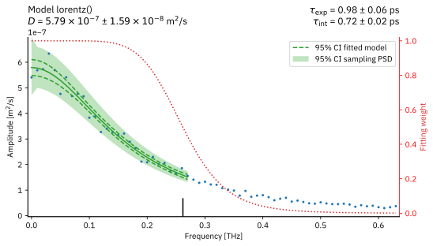
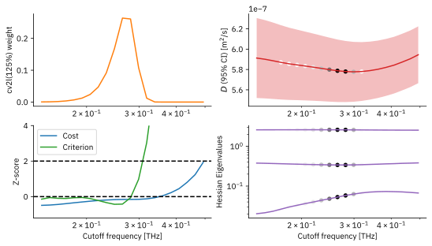
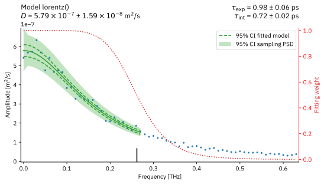
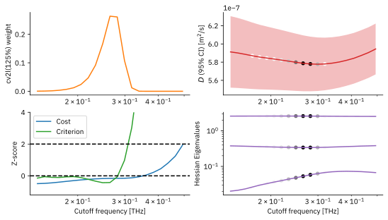

Diffusion on a Surface with Newtonian Dynamics¶
This example shows how to compute the diffusion coefficient of a particle adsorbed on a crystal surface. For simplicity, the motion of the adsorbed particle is described by Newton’s equations (without thermostat), i.e. in the NVE ensemble, and the particle can only move in two dimensions.
This is a completely self-contained example that generates the input sequences (with numerical integration) and then analyzes them with STACIE. Unless otherwise noted, atomic units are used.
Library Imports and Matplotlib Configuration¶
import attrs
import matplotlib as mpl
import matplotlib.pyplot as plt
import numdifftools as nd
import numpy as np
import scipy.constants as sc
from numpy.typing import ArrayLike, NDArray
from stacie import (
UnitConfig,
compute_spectrum,
estimate_acint,
LorentzModel,
plot_extras,
plot_fitted_spectrum,
)
from utils import compute_msds
mpl.rc_file("matplotlibrc")
%config InlineBackend.figure_formats = ["svg"]
Data Generation¶
Potential energy surface¶
The first cell below defines the potential energy of a particle on a surface, as well as the force that the surface exerts on the particle. The potential energy model is a superposition of cosine functions:
with
The default settings for this notebook result in a hexagonal lattice: \(A = 0.2\,\mathrm{eV}\), \(\lambda = 5\,\mathrm{a}_0\), \(N=3\), and \(\alpha = 2\pi/3\). One may change these parameters to construct different types of surfaces:
A square lattice: \(N = 2\) and \(\alpha = \pi/2\).
A quasi-periodic pentagonal lattice: \(N=5\) and \(\alpha = 2\pi/5\).
The rest of the notebook is set up to work well with the default parameters. If you change the potential energy model, remaining settings will also need to be adapted.
WAVELENGTH = 5.0
ALPHA = 2 * np.pi / 3
ANGLES = np.arange(3) * ALPHA
EV = sc.value("electron volt") / sc.value("atomic unit of energy")
AMPLITUDE = 0.2 * EV
ANGSTROM = 1e-10 / sc.value("atomic unit of length")
def potential_energy_force(coords: ArrayLike) -> tuple[NDArray, NDArray]:
"""Compute the potential energies for given particle positions.
Parameters
----------
coords
A NumPy array with one or more particle positions.
The last dimension is assumed to have size two.
Index 0 and 1 of the last axis correspond to x and y coordinates,
respectively.
Returns
-------
energy
The potential energies for the given particle positions.
An array with shape `pos.shape[:-1]`.
force
The forces acting on the particles.
Same shape as `pos`, with same index conventions.
"""
coords = np.asarray(coords, dtype=float)
x = coords[..., 0]
y = coords[..., 1]
energy = 0
force = np.zeros(coords.shape)
wavenum = 2 * np.pi / WAVELENGTH
for angle in ANGLES:
arg = (x * np.cos(angle) + y * np.sin(angle)) * wavenum
energy -= np.cos(arg)
sin_wave = np.sin(arg) * wavenum
force[..., 0] -= sin_wave * np.cos(angle)
force[..., 1] -= sin_wave * np.sin(angle)
return AMPLITUDE * energy, AMPLITUDE * force
The following code cell provides a quick visual test of the forces using numdifftools. (The force is equal to minus the energy gradient.)
(np.float64(0.004500133964627546), array([-0.00569293, -0.01063935]))
[0.00569293 0.01063935]
Finally, the following code cell plots the potential energy surface.
def plot_pes():
plt.close("pes")
fig, ax = plt.subplots(num="pes")
xs = np.linspace(-30, 30, 201)
ys = np.linspace(-20, 20, 201)
coords = np.array(np.meshgrid(xs, ys)).transpose(1, 2, 0)
energies = potential_energy_force(coords)[0]
cf = ax.contourf(xs / ANGSTROM, ys / ANGSTROM, energies / EV, levels=20)
ax.set_aspect("equal", "box")
ax.set_xlabel("x [Å]")
ax.set_ylabel("y [Å]")
ax.set_title("Potential Energy Surface")
fig.colorbar(cf, ax=ax, label="Energy [eV]")
plot_pes()

Newtonian Dynamics¶
The following code cell implements a vectorized Velocity Verlet integrator, which can integrate multiple independent trajectories at the same time. Some parameters, like mass and time step are fixed as global constants. The mass is that of an Argon atom converted to atomic units. The timestep is five femtosecond converted to atomic units.
MASS = sc.value("unified atomic mass unit") * 39.948 / sc.value("atomic unit of mass")
FEMTOSECOND = 1e-15 / sc.value("atomic unit of time")
PICOSECOND = 1e-12 / sc.value("atomic unit of time")
TERAHERTZ = 1e12 * sc.value("atomic unit of time")
TIMESTEP = 5 * FEMTOSECOND
@attrs.define
class Trajectory:
"""Bundle dynamics trajectory results.
The first axis of all array attributes corresponds to time steps.
"""
timestep: float = attrs.field()
"""The spacing between two recorded time steps."""
coords: NDArray = attrs.field()
"""The time-dependent particle positions, with shape `(natom, 2, nstep)`.
The last index is used for time steps, of which only every `block_size` step is recorded.
"""
vels: NDArray = attrs.field()
"""The time-dependent particle velocities, with shape `(natom, 2, nstep)`.
If block_size is larger than 1,
this attribute contains the block-averaged velocity.
"""
potential_energies: NDArray = attrs.field()
"""The time-dependent potential energies."""
kinetic_energies: NDArray = attrs.field()
"""The time-dependent potential energies."""
@classmethod
def empty(cls, shape: tuple[int, ...], nstep: int, timestep: float):
"""Construct an empty trajectory object."""
return cls(
timestep,
np.zeros((*shape, 2, nstep)),
np.zeros((*shape, 2, nstep)),
np.zeros((*shape, nstep)),
np.zeros((*shape, nstep)),
)
@property
def nstep(self) -> int:
"""The number of time steps."""
return self.coords.shape[-1]
def integrate(coords: ArrayLike, vels: ArrayLike, nstep: int, block_size: int = 1):
"""Integrate Newton's equation of motion for the given initial conditions.
Parameters
----------
coords
The initial particle positions.
Index 0 and 1 of the last axis correspond to x and y coordinates.
vels
The initial particle velocities.
Index 0 and 1 of the last axis correspond to x and y coordinates.
nstep
The number of MD time steps.
block_size
The block_size with which to record the trajectory data.
Returns
-------
trajectory
A Trajectory object holding all the results.
"""
traj = Trajectory.empty(coords.shape[:-1], nstep // block_size, TIMESTEP * block_size)
energies, forces = potential_energy_force(coords)
delta_vels = forces * (0.5 * TIMESTEP / MASS)
vels_block = 0
for istep in range(traj.nstep * block_size):
vels += delta_vels
coords += vels * TIMESTEP
energies, forces = potential_energy_force(coords)
delta_vels = forces * (0.5 * TIMESTEP / MASS)
vels += delta_vels
vels_block += vels
if istep % block_size == block_size - 1:
itraj = istep // block_size
traj.coords[..., itraj] = coords
traj.vels[..., itraj] = vels_block / block_size
traj.potential_energies[..., itraj] = energies
traj.kinetic_energies[..., itraj] = (0.5 * MASS) * (vels**2).sum(axis=-1)
vels_block = 0
return traj
As a quick test, the following code cell integrates the equations of motion for a single particle with a small initial velocity. In this case, the particle oscillates around the origin and one can easily verify that the total energy is conserved.
def demo_energy_conservation():
"""Simple demo of the approximate energy conservation.
The initial velocity is small enough
to let the particle vibrate around the origin.
"""
nstep = 100
traj = integrate(np.zeros(2), np.full(2, 1e-4), nstep)
plt.close("energy")
_, ax = plt.subplots(num="energy")
times = np.arange(traj.nstep) * traj.timestep
ax.plot(times / PICOSECOND, traj.potential_energies / EV, label="potential")
ax.plot(
times / PICOSECOND,
(traj.potential_energies + traj.kinetic_energies) / EV,
label="total",
)
ax.set_title("Energy Conservation Demo")
ax.set_xlabel("Time [ps]")
ax.set_ylabel("Energy [eV]")
ax.legend()
demo_energy_conservation()
Demonstration of Deterministic Choas¶
Newtonian dynamics is deterministic, but has chaotic solutions for many systems. The particle on a surface in this notebook is no exception. The following cell shows two trajectories for nearly identical initial conditions, but they slowly drift apart over time. After sufficient time, any information about their nearly identical initial conditions is lost.
def demo_chaos():
vels = np.array([[1e-3, 1e-4], [1.000001e-3, 1e-4]])
traj = integrate(np.zeros((2, 2)), vels, 1500)
plt.close("chaos")
_, ax = plt.subplots(num="chaos")
ax.plot([0], [0], "o", color="k", label="Initial position")
ax.plot(
traj.coords[0, 0] / ANGSTROM,
traj.coords[0, 1] / ANGSTROM,
color="C1",
label="Trajectory 1",
)
ax.plot(
traj.coords[1, 0] / ANGSTROM,
traj.coords[1, 1] / ANGSTROM,
color="C3",
ls=":",
label="Trajectory 2",
)
ax.set_aspect("equal", "box")
ax.set_xlabel("x [Å]")
ax.set_ylabel("y [Å]")
ax.legend()
ax.set_title("Two Trajectories")
plt.close("chaos_dist")
_, ax = plt.subplots(num="chaos_dist")
times = np.arange(traj.nstep) * traj.timestep
ax.semilogy(
times / PICOSECOND,
np.linalg.norm(traj.coords[0] - traj.coords[1], axis=0) / ANGSTROM,
)
ax.set_xlabel("Time [ps]")
ax.set_ylabel("Interparticle distance [Å]")
ax.set_title("Slow Separation")
demo_chaos()
Because the trajectories are chaotic, the short term motion is ballistic, while the long term motion is a random walk.
Note that the random walk is only found in a specific energy window. If the energy is too small, the particles will oscillate around a local potential energy minimum. If the energy is too large, or just high enough to cross barriers, the particles will follow almost linear paths over the surface.
Surface diffusion without block averages¶
This section considers 100 independent particles whose initial velocities have the same magnitude but whose directions are random. The time-dependent particle velocities are used as inputs for STACIE to compute the diffusion coefficient.
def demo_stacie(block_size: int = 1):
"""Simulate particles on a surface and compute the diffusion coefficient.
Parameters
----------
block_size
The block size for the block averages.
If 1, no block averages are used.
Returns
-------
result
The result of the STACIE analysis.
"""
natom = 100
nstep = 20000
rng = np.random.default_rng(42)
vels = rng.normal(0, 1, (natom, 2))
vels *= 9.7e-4 / np.linalg.norm(vels, axis=1).reshape(-1, 1)
traj = integrate(np.zeros((natom, 2)), vels, nstep, block_size)
plt.close(f"trajs_{block_size}")
_, ax = plt.subplots(num=f"trajs_{block_size}", figsize=(6, 6))
for i in range(natom):
ax.plot(traj.coords[i, 0], traj.coords[i, 1])
ax.set_aspect("equal", "box")
ax.set_xlabel("x [a$_0$]")
ax.set_ylabel("y [a$_0$]")
ax.set_title(f"{natom} Newtonian Pseudo-Random Walks")
spectrum = compute_spectrum(
traj.vels.reshape(2 * natom, traj.nstep),
timestep=traj.timestep,
)
# Define units and conversion factors used for screen output and plotting.
# This does not affect numerical values stored in the result object.
uc = UnitConfig(
acint_symbol="D",
acint_unit=sc.value("atomic unit of time")
/ sc.value("atomic unit of length") ** 2,
acint_unit_str="m$^2$/s",
acint_fmt=".2e",
freq_unit=TERAHERTZ,
freq_unit_str="THz",
time_unit=PICOSECOND,
time_unit_str="ps",
time_fmt=".2f",
)
# The maximum cutoff frequency is chosen to be 1 THz,
# by inspecting the first spectrum plot.
# Beyond the cutoff frequency, the spectrum has resonance peaks that
# the Lorentz model is not designed to handle.
result = estimate_acint(
spectrum, LorentzModel(), fcut_max=TERAHERTZ, verbose=True, uc=uc
)
# Plotting
plt.close(f"spectrum_{block_size}")
_, ax = plt.subplots(num=f"spectrum_{block_size}")
plot_fitted_spectrum(ax, uc, result)
plt.close(f"extras_{block_size}")
_, axs = plt.subplots(2, 2, num=f"extras_{block_size}")
plot_extras(axs, uc, result)
return traj, result
traj_1, result_1 = demo_stacie()
CUTOFF FREQUENCY SCAN cv2l(125%)
neff criterion fcut [THz]
--------- ---------- ----------
15.0 40.4 1.41e-01
15.9 39.8 1.50e-01
16.9 39.0 1.60e-01
18.0 38.3 1.70e-01
19.1 37.6 1.81e-01
20.3 37.0 1.93e-01
21.6 36.3 2.06e-01
23.0 35.7 2.19e-01
24.4 35.0 2.33e-01
25.9 34.4 2.48e-01
27.6 33.9 2.64e-01
29.3 34.0 2.81e-01
31.2 34.8 2.99e-01
33.2 37.0 3.18e-01
35.3 40.9 3.39e-01
37.5 46.7 3.61e-01
39.9 56.4 3.84e-01
42.4 75.9 4.09e-01
45.1 102.9 4.35e-01
48.0 133.8 4.63e-01
51.1 161.2 4.93e-01
Cutoff criterion exceeds incumbent + margin: 33.9 + 100.0.
INPUT TIME SERIES
Time step: 0.01 ps
Simulation time: 100.00 ps
Maximum degrees of freedom: 400.0
MAIN RESULTS
Autocorrelation integral: 5.79e-07 ± 1.59e-08 m$^2$/s
Integrated correlation time: 0.72 ± 0.02 ps
SANITY CHECKS (weighted averages over cutoff grid)
Effective number of points: 27.4 (ideally > 60)
Regression cost Z-score: -0.2 (ideally < 2)
Cutoff criterion Z-score: -0.1 (ideally < 2)
MODEL lorentz() | CUTOFF CRITERION cv2l(125%)
Number of parameters: 3
Average cutoff frequency: 2.62e-01 THz
Exponential correlation time: 0.98 ± 0.06 ps
RECOMMENDED SIMULATION SETTINGS (EXPONENTIAL CORR. TIME)
Block time: < 0.31 ± 0.03 ps
Simulation time: > 61.70 ± 0.45 ps
 



The spectrum has several peaks related to oscillations of the particles around a local minimum. These peaks are irrelevant to the diffusion coefficient. The broad peak at zero frequency is used by STACIE to derive the diffusion coefficient. The obtained value is not directly comparable to experiment because the 2D lattice model for the surface is not based on an experimental case. However, the order of magnitude is comparable to the self-diffusion constants of pure liquids [BUNO22].
It is also interesting to compare the integrated and exponential autocorrelation time, as they are not the same in this case.
corrtime_exp = 0.982 ps
corrtime_int = 0.718 ps
The integrated autocorrelation time is smaller than the exponential one because the former is an average of all time scales of the particle velocities. This includes the slow diffusion and faster oscillations in local minima. In contrast, the exponential autocorrelation time only represents the slow diffusive motion.
Finally, it is well known that the velocity autocorrelation function of molecules in a liquid decays according to a power law [AW70]. One might wonder why the Lorentz model can be used here since it implies that diffusion can be described with an exponentially decaying autocorrelation function. The system in this notebook exhibits exponential decay because every particle only interacts with the surface, and not with each other, such that there are no collective modes with long memory effects.
Surface diffusion with block averages¶
This section repeats the same example, but now with block averages of velocities. Block averages are primarily useful for reducing storage requirements when saving trajectories to disk before processing them with STACIE. In this example, the block size is determined by the following guideline:
Let’s use a block size of 60 to stay on the safe side.
traj_60, result_60 = demo_stacie(60)
CUTOFF FREQUENCY SCAN cv2l(125%)
neff criterion fcut [THz]
--------- ---------- ----------
15.0 40.4 1.41e-01
15.9 39.7 1.51e-01
16.9 38.9 1.60e-01
18.0 38.1 1.71e-01
19.1 37.5 1.82e-01
20.3 36.9 1.93e-01
21.6 36.2 2.06e-01
23.0 35.5 2.19e-01
24.4 34.8 2.33e-01
25.9 34.2 2.48e-01
27.6 33.9 2.64e-01
29.3 34.3 2.81e-01
31.2 35.7 2.99e-01
33.2 38.5 3.19e-01
35.3 43.0 3.39e-01
37.5 49.4 3.61e-01
39.9 59.1 3.84e-01
42.4 76.9 4.09e-01
45.1 97.5 4.36e-01
48.0 118.6 4.64e-01
51.1 135.8 4.94e-01
Cutoff criterion exceeds incumbent + margin: 33.9 + 100.0.
INPUT TIME SERIES
Time step: 0.30 ps
Simulation time: 99.90 ps
Maximum degrees of freedom: 400.0
MAIN RESULTS
Autocorrelation integral: 5.80e-07 ± 1.60e-08 m$^2$/s
Integrated correlation time: 1.00 ± 0.03 ps
SANITY CHECKS (weighted averages over cutoff grid)
Effective number of points: 26.7 (ideally > 60)
Regression cost Z-score: -0.1 (ideally < 2)
Cutoff criterion Z-score: -0.1 (ideally < 2)
MODEL lorentz() | CUTOFF CRITERION cv2l(125%)
Number of parameters: 3
Average cutoff frequency: 2.56e-01 THz
Exponential correlation time: 0.99 ± 0.06 ps
RECOMMENDED SIMULATION SETTINGS (EXPONENTIAL CORR. TIME)
Block time: < 0.31 ± 0.03 ps
Simulation time: > 61.99 ± 0.45 ps
As expected, there are no significant changes in the results.
It is again interesting to compare the integrated and exponential autocorrelation times.
corrtime_exp = 0.987 ps
corrtime_int = 0.997 ps
The exponential autocorrelation time is unaffected by the block averages. However, the integrated autocorrelation time has increased and is now closer to the exponential value. Taking block averages removes the fastest oscillations, causing the integrated autocorrelation time to be dominated by slow diffusive motion.
Comparison to mean-squared displacement analysis¶
This section does not perform a full regression to derive the diffusion coefficient from the mean-squared displacement (MSD) data. Instead, it simply computes the MSDs from the trajectories, and plots them together with the expected slope from STACIE’s analysis above, to confirm that STACIE’s results are consistent with the MSD analysis. This avoids the pernicious choices required for a full regression analysis of the MSD data.
def plot_msd(traj, result, lags, time_step):
"""Plot mean-squared displacements from trajectory and STACIE result.
Parameters
----------
traj
The trajectory object.
result
The STACIE result object.
lags
The integer lag times (in number of (block) time steps)
for which to compute the MSDs.
time_step
The time step size of the trajectory, possibly accounting for the block size.
"""
lag_times = lags * time_step
natom = traj.coords.shape[0]
msds = compute_msds(traj.coords.reshape(natom * 2, traj.nstep), lags)
plt.close("msd")
_, ax = plt.subplots(num="msd")
ax.plot(
lag_times / PICOSECOND,
msds / ANGSTROM**2,
"C0o",
label="MSD from trajectories",
)
ax.plot(
lag_times / PICOSECOND,
2 * result.acint * lag_times / ANGSTROM**2,
"C1-",
label="Expected slope",
)
ax.set_xlabel("Lag time [ps]")
ax.set_ylabel("Mean-squared displacement [Å$^2$]")
lags = np.unique(np.logspace(1, 3, 50).astype(int))
plot_msd(traj_1, result_1, lags, TIMESTEP)
As expected, the simple comparison confirms that STACIE’s results are consistent with the MSD analysis. For sufficiently large lag times, the MSDs increase linearly with time, with a slope that corresponds to the diffusion coefficient derived with STACIE.
Note that STACIE only estimates the slope of a straight line fitted to the MSD curve. It does not provide information on the intercept.
Regression Tests¶
If you are experimenting with this notebook, you can ignore any exceptions below. The tests are only meant to pass for the notebook in its original form.
acint_unit = sc.value("atomic unit of time") / sc.value("atomic unit of length") ** 2
acint_1 = result_1.acint / acint_unit
if abs(acint_1 - 5.80e-7) > 5e-9:
raise ValueError(f"Wrong acint (no block average): {acint_1:.2e}")
acint_60 = result_60.acint / acint_unit
if abs(acint_60 - 5.80e-7) > 5e-9:
raise ValueError(f"Wrong acint (block size 60): {acint_60:.2e}")